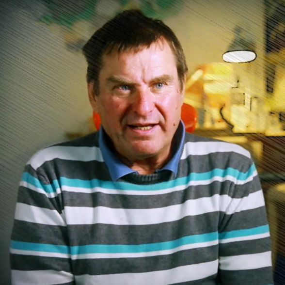

산업 디자이너를 거쳐 놀이터 디자이너로 활동하고 있는
Günter Beltzig

1962 - 1966
Werkkunstschule Wuppertal에서 산업 디자인 연구 (Dipl. Design)
1966 - 1970
Siemens AG 뮌헨 디자인 부서의 디자이너
1966 - 1976
플라스틱 회사 Brüder Beltzig Design의 설립 및 제품 프로그램 개발
1970 - ing
프리랜서 디자이너
귄터 벨치히
는 1968년, 선구적인 플로리스 의자를 만들어 그를 유명 하게 만들었습니다.
플로리스는 오늘 뉴욕 현대 미술관 MOMA와 유럽의 여러 박물관 및
LÖFFLER 컬렉션에서 찾을 수 있습니다.
플로리스는 오늘 뉴욕 현대 미술관 MOMA와 유럽의 여러 박물관 및
LÖFFLER 컬렉션에서 찾을 수 있습니다.
[출처] LOFFLER 디자이너 소개 中
산업 디자이너를 거쳐
놀이터 디자이너로 활동하고 있는 그는 이렇게 회고하고 있습니다.
"그때 우리는 세상을 개선하고 싶었습니다. 그럼 어디서 시작해야 할까?
나는 어린이들로부터 시작하는 것이 최선이라고 생각했습니다.
이제 돌이켜보면 나는 세상을 바꾸지 못했지만 많은 어린이들에게
더 나은 놀이 가능성을 만들어주었다고 생각합니다."
놀이터 디자이너로 활동하고 있는 그는 이렇게 회고하고 있습니다.
"그때 우리는 세상을 개선하고 싶었습니다. 그럼 어디서 시작해야 할까?
나는 어린이들로부터 시작하는 것이 최선이라고 생각했습니다.
이제 돌이켜보면 나는 세상을 바꾸지 못했지만 많은 어린이들에게
더 나은 놀이 가능성을 만들어주었다고 생각합니다."
[출처] 놀이터의 생각 글쓴이 소개 中